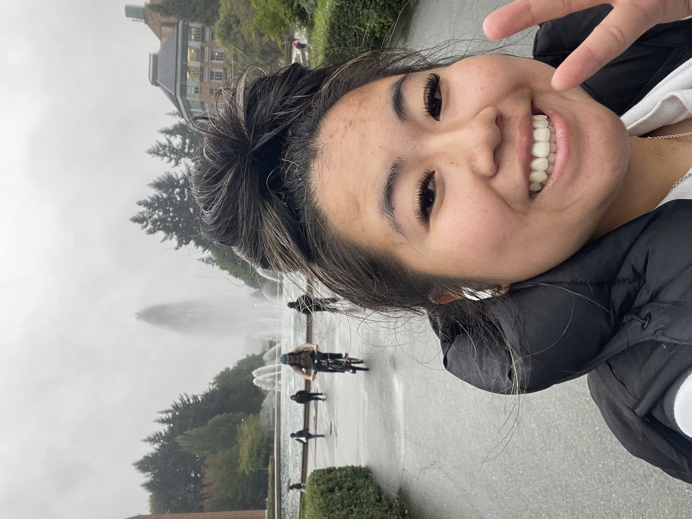

I was born and raised in Seattle, Washington and grew up in a house on Beacon Hill
with my parents and younger sister. My parents are Vietnamese and Chinese so I
grew up eating alot of asian cuisines. Growing up, I spent a lot of time trying out new
sports and ended up falling in love with Soccer and Ultimate frisbee. I played Soccer
for 13 years and ultimate frisbee for 7 year. I ended up playing for a team where
we traveled to Minnosota for a 3 day tournament and my team placed 1st! Im currently
living and commuting from Renton where I live with my fiance and our 4 dogs.
I am currently on my 5th year here at the University of Washington. Tranistioning into
the UW from high school, I planned on majoring in Computer Science but I was not able to
get in. I then tried to get into Informatics during my first 3 years here but was also
unsuccessful. Now I am happy to say I am majoring in Geography Data Science.
In additional to going to school full time, I am also currently working as a GIS
analyst for Seattle City Light. I ended up working on the same department as my dad
but he is an engineer. My dad and the fellow engineers will go out to the field and then
create drawings for my team and I to draw into a map that is being utilitze by everyone.
With it being the school year, I am only allowed to work up to 20 hours as this internship
values our school and studies before everything else. I will usually find time between
classes or after class to get my work done.